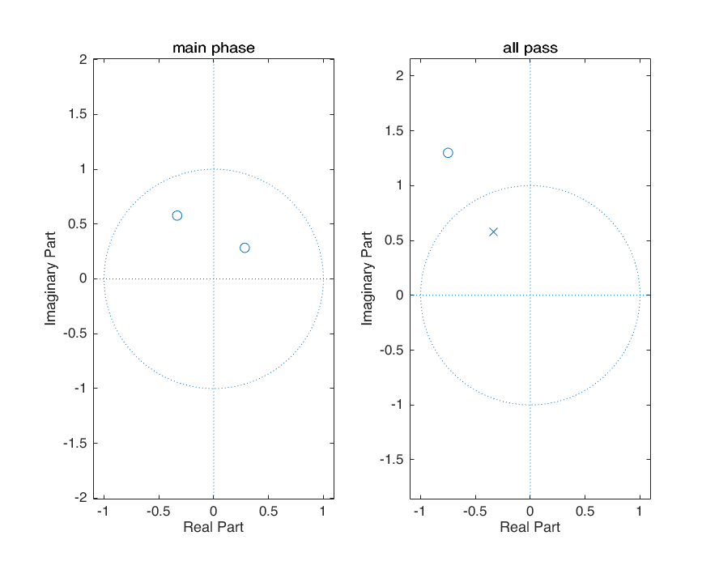

clc; clear; close all;
z1 = 3/2*exp(1i*2*pi/3);
z2 = 0.4*exp(1i*pi/4);
sys_poles = [];
sys_zeros = [z1;z2];
figure
zplane(sys_zeros,sys_poles)
title('whole system')
z_c1 = 1/conj(z1);
p_c1 = z_c1;
minPhase_sys_poles = [];
minPhase_sys_zeros = [z2;z_c1];
figure
subplot(1,2,1)
zplane(minPhase_sys_zeros,minPhase_sys_poles)
title('main phase')
subplot(1,2,2)
allpass_sys_poles = [p_c1];
allpass_sys_zeros = [z1];
zplane(allpass_sys_zeros,allpass_sys_poles)
title('all pass')

figure
num = poly(sys_zeros);
den = poly(sys_poles);
[H,w] = freqz(num,den);
subplot(2,1,1)
plot(w,abs(H))
axis tight
title('Original System')
ylabel('Magnitude')
xlabel('Frequency')
subplot(2,1,2)
plot(w,angle(H))
ylabel('Angle')
xlabel('Frequency')
axis tight
figure
subplot(2,1,1)
plot(w,angle(H));title('phase of original system');axis tight
subplot(2,1,2)
[grd,w] = grpdelay(num,den,512,'whole');
plot(w,grd);title('group delay of original system');axis tight
figure
num = poly(minPhase_sys_zeros);
den = poly(minPhase_sys_poles);
[H,w] = freqz(num,den);
subplot(2,1,1)
plot(w,abs(H))
axis tight
title('MinPhase System')
ylabel('Magnitude')
xlabel('Frequency')
subplot(2,1,2)
plot(w,angle(H))
ylabel('Angle')
xlabel('Frequency')
axis tight
figure
subplot(2,1,1)
plot(w,angle(H));title('phase of MinPhase system');axis tight
subplot(2,1,2)
[grd,w] = grpdelay(num,den,512,'whole');
plot(w,grd);title('group delay of MinPhase system');axis tight
figure;
num = poly(allpass_sys_zeros);
den = poly(allpass_sys_poles);
[H,w] = freqz(num,den);
subplot(2,1,1); plot(w,abs(H)); title('Allpass System')
ylabel('Magnitude'); xlabel('Frequency');axis tight
subplot(2,1,2); plot(w,angle(H));
ylabel('Angle'); xlabel('Frequency'); axis tight
figure
subplot(2,1,1)
plot(w,angle(H));title('phase of Allpass system');axis tight
subplot(2,1,2)
[grd,w] = grpdelay(num,den,512,'whole');
plot(w,grd);title('group delay of Allpass system');axis tight